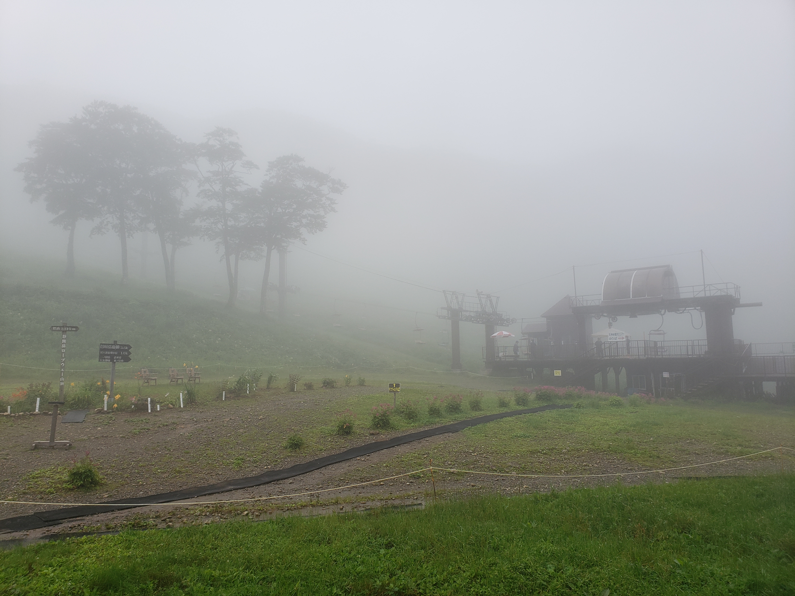
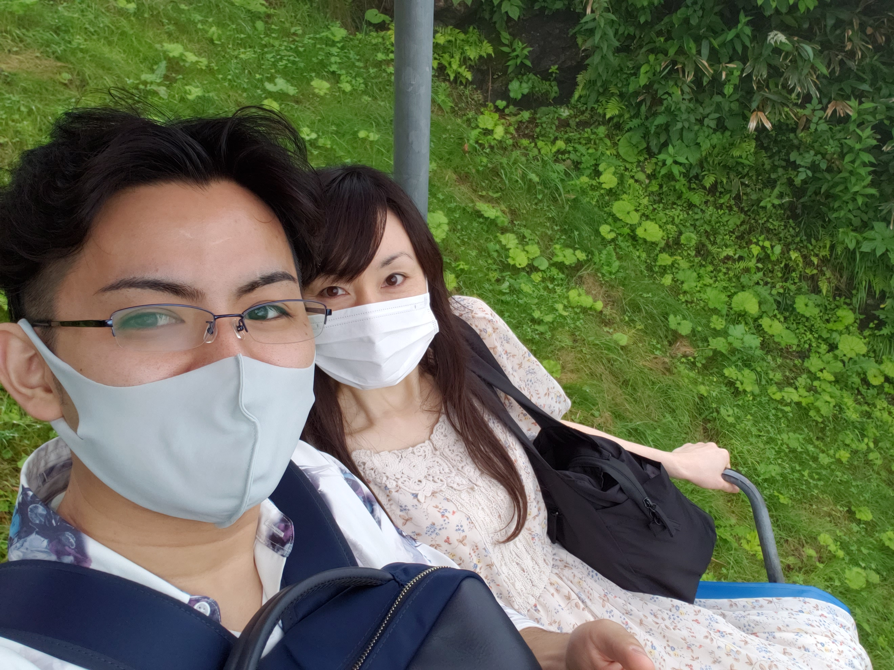
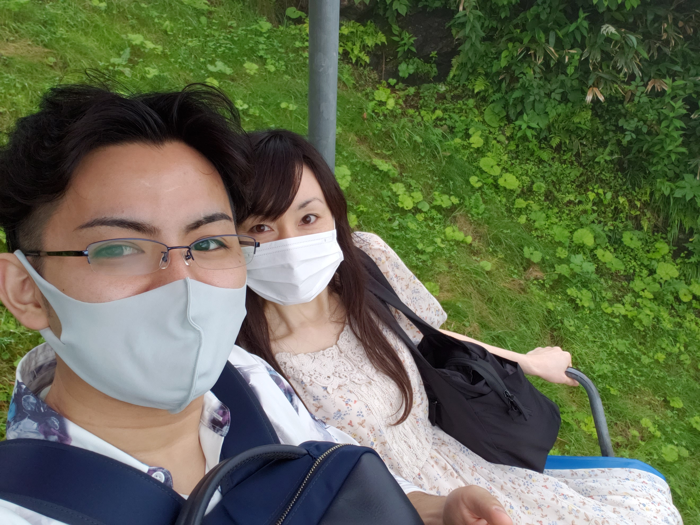
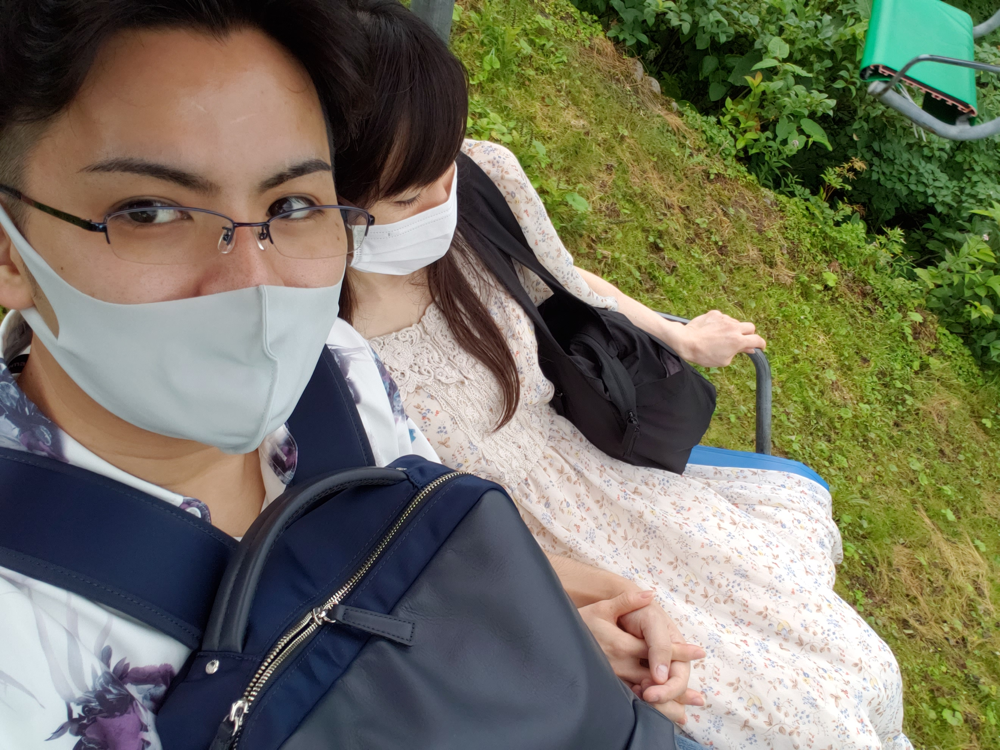
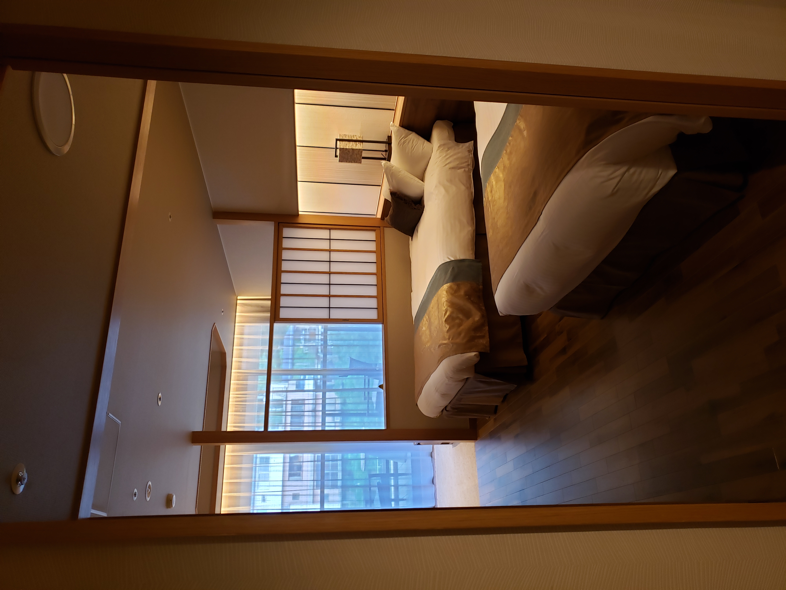
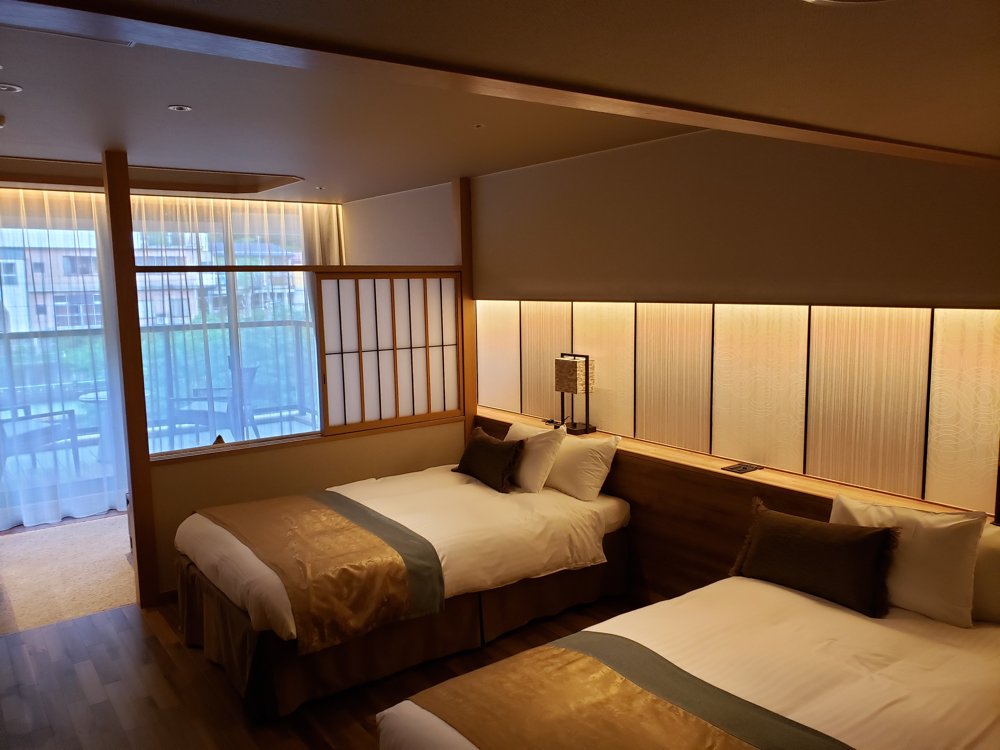
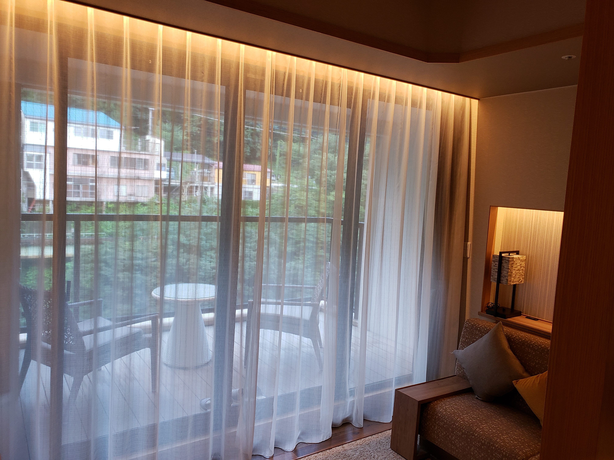
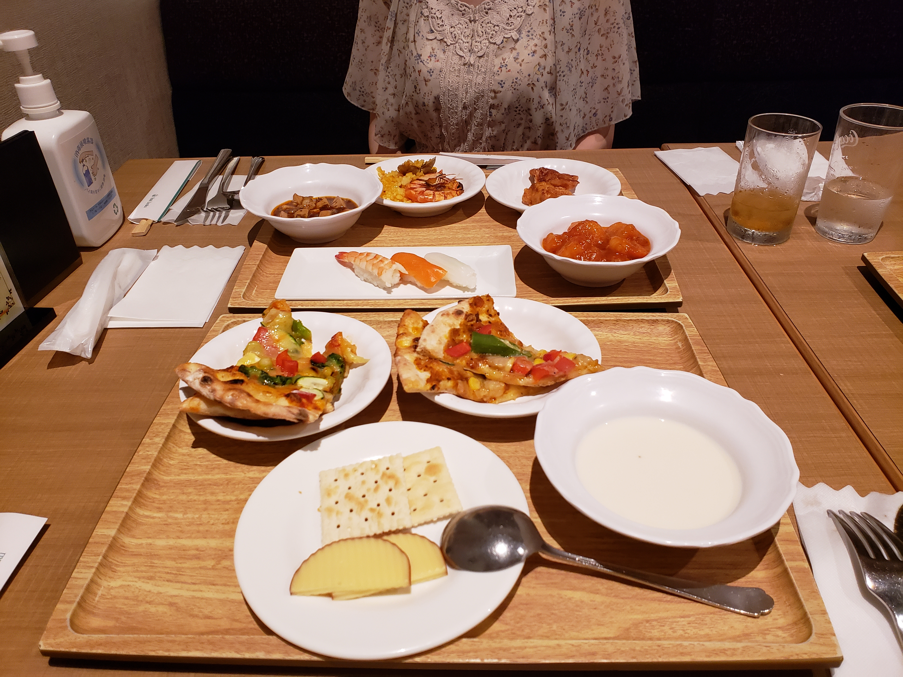
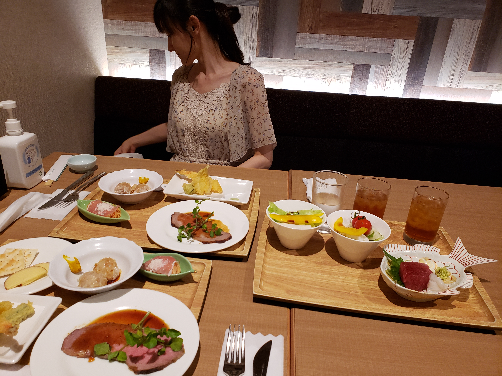
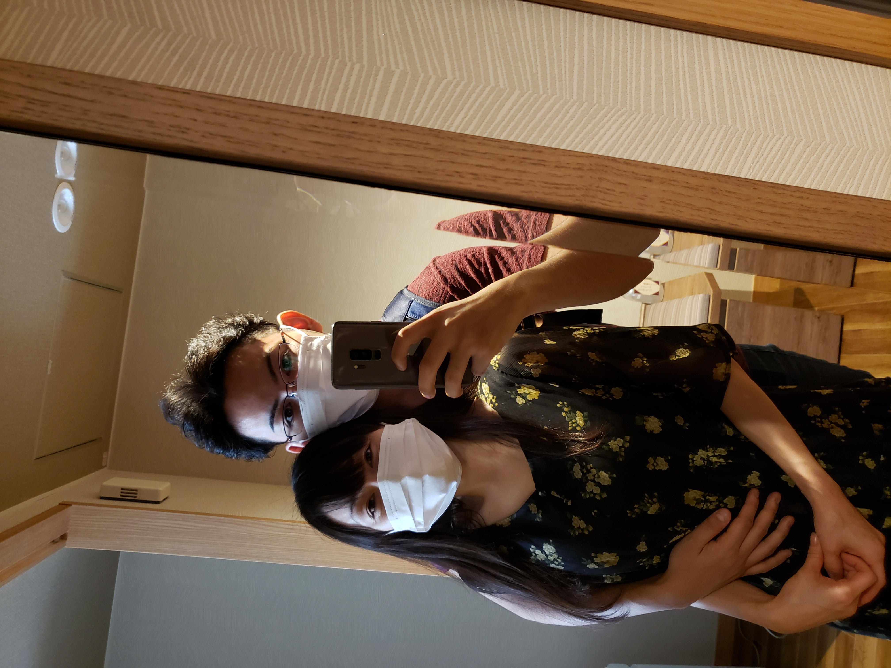

2020/08/30-31-みなかみ温泉
二人の初めての旅行
楽しみで寝不足になりながらも10時に新宿駅に集合。三時間かけて群馬のみなかみ温泉まで向かう
人気の少ないローカル線に乗り、風景がビルや住宅から緑へ段々と変わっていく。
そんなごく普通のことすら期待感を募らせてくれる
楽しみで寝不足になりながらも10時に新宿駅に集合。三時間かけて群馬のみなかみ温泉まで向かう
人気の少ないローカル線に乗り、風景がビルや住宅から緑へ段々と変わっていく。
そんなごく普通のことすら期待感を募らせてくれる
みなかみ駅に到着したのは14時頃。チェックインは後にし谷川岳ロープウェイへ
谷川岳ロープウェイに到着。ゴンドラとリフトに乗り山頂へ
平日である上にシーズンオフだからか他のお客はほとんどおらずほぼ貸し切り状態だった
天気は若干曇りだったためすこし肌寒かったが上っていくうちに雲を通過したりと少しレアな体験をした
（どうでもいい話だがこういったBLOGのようなものを作る際は写真を沢山撮っておかないと素材不足で旅行の様子を正確に伝えられないんだと反省した…）

平日である上にシーズンオフだからか他のお客はほとんどおらずほぼ貸し切り状態だった
天気は若干曇りだったためすこし肌寒かったが上っていくうちに雲を通過したりと少しレアな体験をした
（どうでもいい話だがこういったBLOGのようなものを作る際は写真を沢山撮っておかないと素材不足で旅行の様子を正確に伝えられないんだと反省した…）
 


よそ見中にパシャリ。見返して気づいたがこっそり撮影（俗に盗撮とも言う）した画像が何枚かあった。
改めて口にするととっても悪いことをしているように聞こえるがこうした何気ない一枚が素敵だったりするので許してほしい

改めて口にするととっても悪いことをしているように聞こえるがこうした何気ない一枚が素敵だったりするので許してほしい
山頂に到着
この山に限った話では無いが群馬はとにかく虫が多かった。外だけならまだしも電車、バス、ゴンドラ、全ての乗り物に虫も乗車していたためこの旅行中は常に虫に震えながら過ごしていた
この山に限った話では無いが群馬はとにかく虫が多かった。外だけならまだしも電車、バス、ゴンドラ、全ての乗り物に虫も乗車していたためこの旅行中は常に虫に震えながら過ごしていた

標高1500メートルとは思えない粟野さんの軽装
地面が凸凹しているため歩きづらくケガをしないか心配で仕方がなかった
地面が凸凹しているため歩きづらくケガをしないか心配で仕方がなかった

バスに乗り遅れながらも遂にホテルにチェックイン
バルコニー付きのちょっと贅沢な部屋
初めての旅行ということで舞い上がって上から3番目のランクを予約したが大正解だった


初めての旅行ということで舞い上がって上から3番目のランクを予約したが大正解だった
ベッドの奥にはソファとバルコニーが用意されている
バルコニーからは利根川を見下ろすことが出来、ディナー後にロマンチックな時間を過ごした

バルコニーからは利根川を見下ろすことが出来、ディナー後にロマンチックな時間を過ごした


温泉で軽く汗を流してからビュッフェディナー
ビュッフェはメインからデザートまで一品一品目の前で調理するため本格的な料理を出来立てで頂ける

ビュッフェはメインからデザートまで一品一品目の前で調理するため本格的な料理を出来立てで頂ける
またよそ見中にパシャリ。束ねた後ろ髪やそこから覗かせるうなじ、華奢で女性的なラインが素敵

翌朝、ホテルをチェックアウトし少し散歩したのちにロックハート場へ
電車を降り、バスを40分ほど待ち30分ほど揺られて到着
ロックハート城は西洋の建造物を丸々移設して作られており本格的…というより実際の雰囲気を味わえる
電車を降り、バスを40分ほど待ち30分ほど揺られて到着
ロックハート城は西洋の建造物を丸々移設して作られており本格的…というより実際の雰囲気を味わえる

ロックハート城
人を移さないために右寄りに撮影したがそれが不自然になってしまっている
ここでは実際にドレスを着て施設を散策することが、この時も数名のグループが着飾り楽しんでいた
人を移さないために右寄りに撮影したがそれが不自然になってしまっている
ここでは実際にドレスを着て施設を散策することが、この時も数名のグループが着飾り楽しんでいた

エラそうにしているのを撮ってもらった。格好つけているが威厳が欠片も感じられない

ロックハート城を後にし帰路に就いた
クタクタだったため電車内で二人とも寝てしまっていた
今思えば平日の帰宅ラッシュ時に手を繋ぎながら寝ているカップルというのは不届き極まりないと思う
クタクタだったため電車内で二人とも寝てしまっていた
今思えば平日の帰宅ラッシュ時に手を繋ぎながら寝ているカップルというのは不届き極まりないと思う
最後は帰る前に地元で夕食兼汗流しのためにスーパー銭湯へ
旅行後に地元のスーパー銭湯で食べる食事はなんだか安心感があった
料理を突きながら旅の思い出や下らないことで笑いあっていた
旅行後に地元のスーパー銭湯で食べる食事はなんだか安心感があった
料理を突きながら旅の思い出や下らないことで笑いあっていた

最後に一番のお気に入りを。最高に幸せな旅行でした
